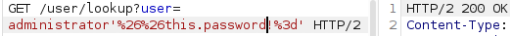
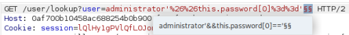

Exploiting NoSQL injection to extract data
- Provided with storefront website, credentials “wiener:peter”, told to extract the administrator password
- Intercepted requests during login using burpsuite
- Last request during login change is a /user/lookup endpoint that checks the user's role
- Modified argument to check for proof of password field in db:

- Forwarded request to intruder and modified to check for each letter and number for each position of the password:

- Discovered password: ftfgyzcc
- Logged in with discovered credentials and completed lab successfully: